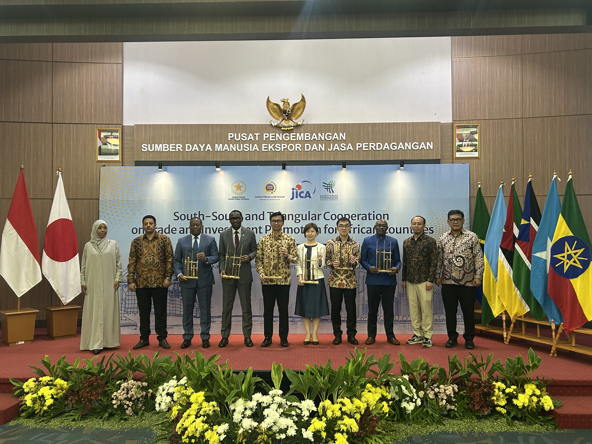
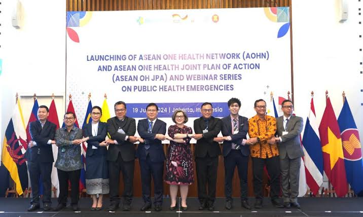
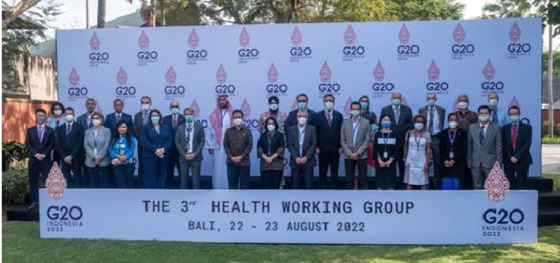
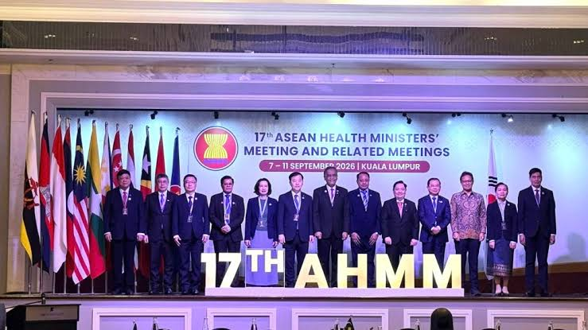

Kerja sama bilateral merupakan kerjasama yang dilakukan oleh dua negara untuk mencapai tujuan bersama. Dalam mendukung SDGs 3, yaitu Kehidupan Sehat dan Sejahtera, Indonesia bekerjasama dengan Jepang karena Indonesia masih membutuhkan dukungan dalam meningkatkan kualitas pelayanan dan tenaga kesehatan. Salah satu bentuk kerjasamanya adalah melalui Japan International Cooperation Agency (JICA) bersama Kementerian Kesehatan RI yang menandatangani kesepakatan kerja sama pada 1 Agustus 2024 untuk mengembangkan dokter spesialis dan tenaga kesehatan dalam menangani penyakit tidak menular, seperti penyakit jantung, stroke, dan kanker. Kerjasama ini bermanfaat untuk meningkatkan kemampuan tenaga kesehatan dapat memperoleh pelayanan kesehatan yang lebih baik dan kerja sama ini turut mendukung tercapainya SDGs 3.
Kerja sama regional merupakan kerjasama yang dilakukan oleh beberapa negara dalam satu kawasan tertentu. Salah satu organisasi regional yang mendukung SDGs 3 adalah ASEAN (Association of Southeast Asian Nations) melalui program ASEAN Health Cluster 1: Promoting Healthy Lifestyle. Kerjasama ini melibatkan 10 negara ASEAN, yaitu Brunei Darussalam, Filipina, Indonesia, Kamboja, Laos, Malaysia, Myanmar, Singapura, Thailand, Timor-Leste, dan Vietnam. Indonesia berperan aktif dalam menyusun dan menjalankan program untuk meningkatkan kesadaran masyarakat tentang pentingnya gaya hidup sehat. Salah satu kegiatannya adalah mendorong aktivitas seperti ASEAN Car Free Day yang dipelopori Indonesia dan kemudian menyebar ke negara-negara ASEAN lainnya. Selain itu, negara-negara ASEAN juga bekerja sama dalam berbagi pengetahuan dan mengembangkan program pencegahan penyakit. Kerja sama ini membantu masyarakat menerapkan pola hidup yang sehat dan mendukung tercapainya SDGs 3.


Kerja sama Multilateral merupakan kerjasama yang melibatkan banyak negara untuk membahas dan mengatasi permasalah bersama. Salah satu forum international yang berkaitan dengan SDGs 3 adalah G20 melalui Health Working Group (HWG). Pada tahun 2022, Indonesia berperan sebagai pemegang presidensi G20 sekaligus memimpin pertemuan HWG di Yogyakarta. Pertemuan ini melibatkan negara-negara anggota G20 dan membahas berbagai upaya untuk memperkuat kesehatan dunia, seperti menyelaraskan standar protokol kesehatan, meningkatkan ketahanan sistem kesehatan, dan memperluas produksi obat-obatan. Kerja sama ini bermanfaat agar setiap negara dapat saling mendukung dan lebih siap menghadapi krisis kesehatan di masa depan. Oleh karena itu, kerja sama ini membantu meningkatkan kualitas kesehatan masyarakat di berbagai negara dan mendukung tercapainya SDGs 3.
Kerja sama internasional adalah hubungan dan kerjasama lintas negara dalam berbagai bidang untuk mencapai kepentingan bersama. Istilah ini bersifat luas dan dapat mencakup kerja sama bilateral, regional, maupun multilateral. Kerja sama ini penting karena permasalahan kesehatan tidak hanya terjadi di Indonesia, tetapi juga menjadi perhatian banyak negara. Oleh karena itu, diperlukan kerja sama antarnegara untuk saling bertukar informasi dan solusi dalam meningkatkan kesadaran masyarakat tentang pentingnya menjaga kesehatan. Salah satu contoh keterlibatan Indonesia adalah dalam ASEAN Health Cluster 1 (Promoting Healthy Lifestyle), yaitu kerja sama regional yang melibatkan negara-negara anggota ASEAN dalam mempromosikan pola hidup sehat.
Dalam kerja sama ini, pihak yang terlibat adalah pemerintah Indonesia, negara-negara anggota ASEAN, Kementerian Kesehatan, Sekretariat ASEAN, serta masyarakat. Salah satu kontribusi nyata Indonesia adalah menginisiasi ASEAN Car Free Day sejak tahun 2018 sebagai kampanye untuk mengajak masyarakat di kawasan ASEAN lebih aktif bergerak melalui kegiatan seperti berjalan kaki, berlari, dan bersepeda. Indonesia juga mendorong negara-negara anggota ASEAN untuk ikut melaksanakan kegiatannya. Melalui kerja sama ini, setiap negara dapat saling berbagi pengalaman dan mengembangkan program kesehatan yang bermanfaat bagi masyarakat. Dengan demikian, kerja sama internasional ini dapat meningkatkan kesadaran dan mendorong kebiasaan hidup sehat.
